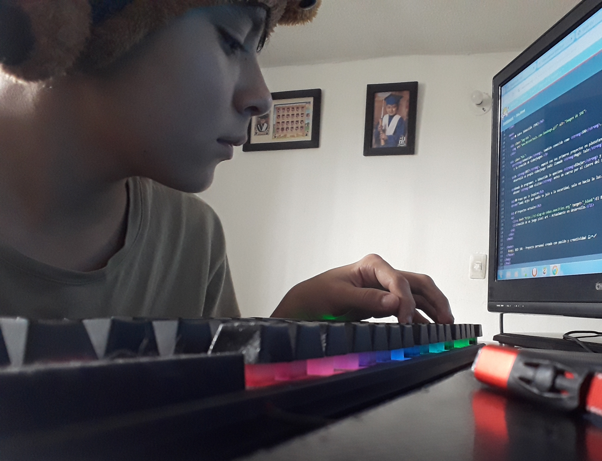

Magic Tale


Sebastián, conocido como SHG, nació el 29 de octubre de 2010. Desde pequeño mostró interés por la tecnología, el dibujo y la creación de videojuegos.
En 2017 comenzó a usar Scratch y Game Maker. En 2020 desarrolló su juego indie Magic Tale, el cual fue cancelado misteriosamente.
En 2021 creó su primera web, que alcanzó 3400 visitas antes de caer por cierre del servicio.
"Jamás dejes que nadie te jale a la oscuridad, solo ve hacia la luz."